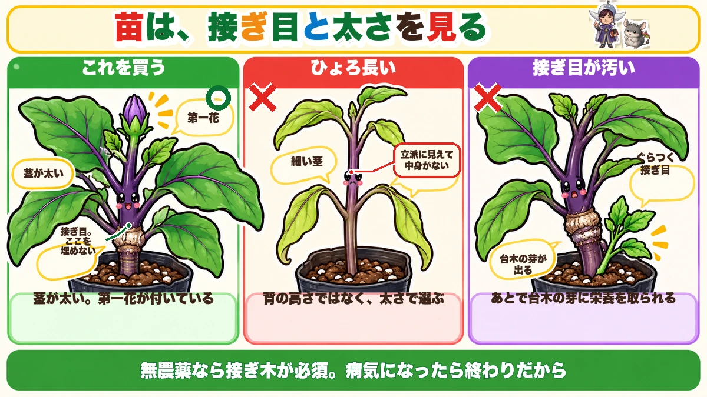
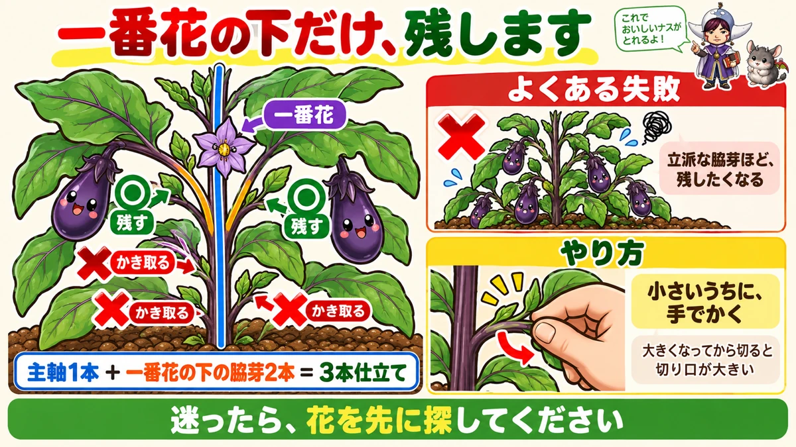
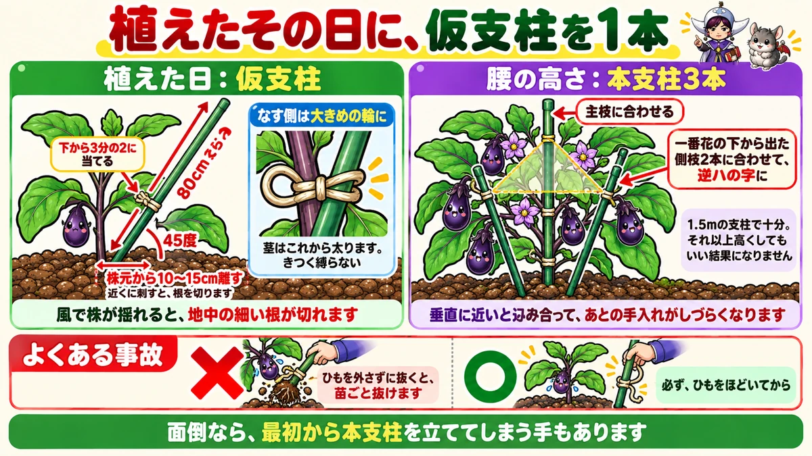
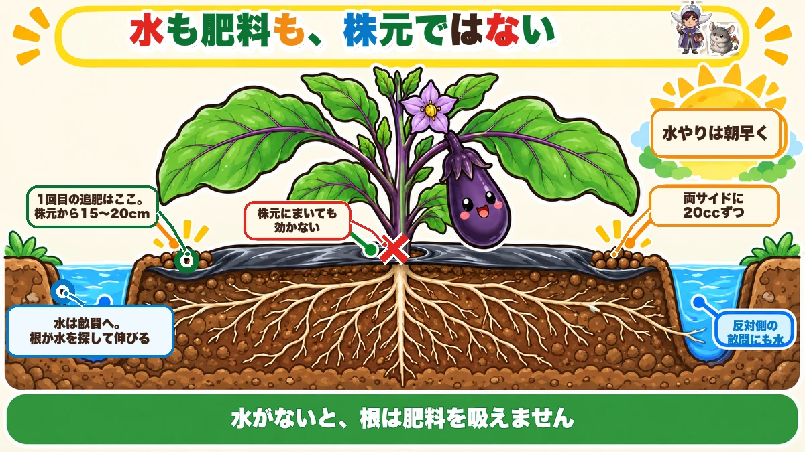
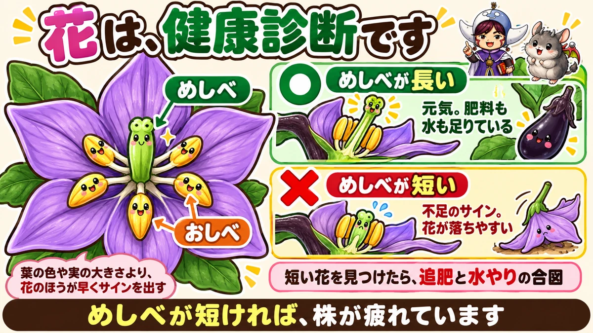
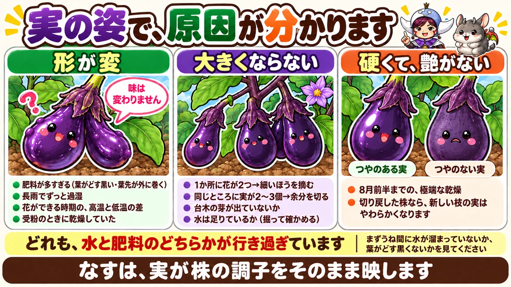
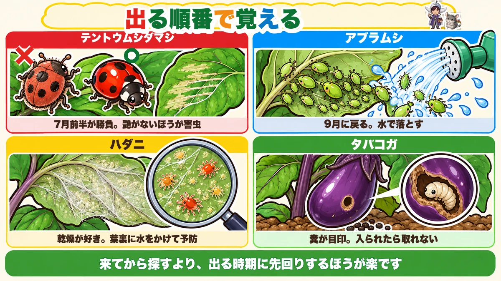

なすの育て方｜苗選び、植えつけ、3本仕立て、追肥と水やり、一番果、更新剪定、虫と病気、収穫
📖 この記事の目次
この記事で分かること
- なすは、夏から秋まで長く収穫できる夏野菜です。そのぶん、肥料と水をたくさん必要とします。
- 苗は、病気に強い接ぎ木苗が強くすすめられます。植えるときは、接ぎ目を土に埋めないことがいちばん大切です。
- 植えてから2週間は、根を深く伸ばす時期です。追肥はせず、畑なら水も控えめにします。
- 家庭菜園では、主な枝を3本にしぼる「3本仕立て」が基本です。一番花のすぐ下のわき芽が、いちばん勢いがよい枝になります。
- 追肥は、植えて1か月ほどから。量は少しずつ、場所は葉の先の真下あたりに入れます。追肥しても元気がないときは、水不足を疑います。
- 夏の暑さで株が疲れたら、更新剪定で切り戻すと、秋なすを楽しめます。
- テントウムシダマシ、アブラムシ、ハダニ、タバコガ、そして青枯病などの病気に注意します。
なすは、焼いても煮ても揚げても、漬物にしてもおいしい、夏の食卓に欠かせない野菜です。家庭菜園でも人気ですが、「実が大きくならない」「途中で元気がなくなった」「秋まで続かなかった」という声もよく聞きます。
なすは、肥料と水が大好きで、手をかけたぶんだけ長く収穫させてくれる野菜です。この記事では、なすの育て方を、苗選びから植えつけ、仕立て方、追肥と水やり、病害虫、秋なすのための更新剪定まで、順番に書いていきます。チャンネルや話す人によって考え方が分かれるところも多いので、両方の考え方を並べておきますね。
早見：なすの基本（ひと目で分かる目安）
植えつけの目安
- 時期：最低気温が10度を上回る日が続くころ。4月下旬〜5月上旬に植え終えるのが理想、という説明が多い
- 株間：60cmが多数派（50〜60cm、日当たりを優先して100cmという例も）
- 苗：接ぎ木苗が強くすすめられる
- 植え方：接ぎ目を埋めない。植えたらすぐに仮支柱
育て方の流れ
- 植えて2週間：追肥しない。畑なら水も控えめ
- 一番花が咲くころ：3本仕立ての枝を決める
- 植えて約1か月：最初の追肥。以後、2週間〜月1回
- 7月下旬〜お盆ごろ：更新剪定（秋なすを楽しむなら）
収穫の目安
- 長さ10cm少々が適したサイズ。20cm近いものは大きすぎ
- 1回の収穫で3〜4個ずつとれるペースで、こまめに

苗選び
接ぎ木苗が強くすすめられる
なすの苗は、病気に強い株（台木）につないだ「接ぎ木苗」が強くすすめられます。半身萎凋病（はんしんいちょうびょう）や青枯病（あおがれびょう）など、土の中の病気に強く、同じ場所で続けて育てたときの心配も減らせ、収量も多い、と説明されます。
無農薬で育てるなら、接ぎ木苗は「必須」という考え方もあります。病気になってしまうと、薬を使わない栽培では打つ手がほとんどないからです。接ぎ木苗は自根苗（つながずに育てた苗）より値段は高いですが、そのぶんの価値はあると考えられます。
よい苗の見分け方
- 最初の花（一番花）がついた、茎の太いしっかりした苗
- 接ぎ目がきれいな苗。接ぎ目が汚い苗は、台木から芽が出やすい
- 葉に虫食いや病気のあとがない苗
肥料が切れている苗がよい、という説も
一方で、葉が上を向いている苗は、ポットの中の肥料が切れているしるしで、そういう苗のほうが植えたあとよく育つ、という説もあります。ポットの中に肥料が残っていると、植えたあと根を伸ばす力が弱くなる、という考え方です（話している人は1人だけです）。
植え遅れたときは大苗を
5月中旬以降には、背丈が20〜30cmほどの大きな苗も売られています。植えつけが遅れた人が取り返すための選択肢になります。
植える前の土づくり
元肥の量の考え方
なすの元肥は、1平方メートルあたり窒素で約20gが目安、という説明があります。有機の肥料なら、油かす100g、鶏ふん200g、牛ふん堆肥600gくらいの組み合わせで、その量に近づく、という例です。農林水産省や各県の農業試験場が出している「作物別の施肥基準」で調べるのが基本だ、とも説明されています。
植える1か月前には入れる
有機の肥料は、分解されるまでに時間がかかります。種まきや植えつけの1か月以上前に入れておく、という説明があります。分解には空気が必要なので、表面近くに入れると早く分解し、深く埋めるとゆっくり効く、という説明もあります。
土づくりが間に合わないとき
土づくりが間に合わなかったときの方法として、次の3つが紹介されています。
- 肥料を入れずに育てる（完熟した牛ふん堆肥や腐葉土は入れてよい）
- 植え穴を深さ30cmほど掘って、底に肥料を入れる（穴肥）。根が肥料に直接ふれないよう、絶対に浅くしない
- 株の横や畝のあいだに肥料を入れておく
元肥を入れてから1週間ほどしか置かずに植えると、肥料が分解しきれずに、植えた直後に根が傷むことがある、と説明されます。
植えつけ
時期と気温
植えつけは、最低気温が10度を上回る日が続くころが目安です。4月下旬はまだ10度を下回る日もあるので、早く植える場合は、支柱4本に空の肥料袋をかぶせた「あんどん」や、不織布のトンネルで、寒さと風から守ります。
手順1：苗に水を吸わせる
バケツにポットの半分くらいの深さの水を入れ、ポットごと10分ほどつけて、苗に水を吸わせます。
手順2：深さを合わせる
マルチに穴をあけ、ポットごと置いてみて、苗の土の表面が周りより1cmほど高くなる位置に合わせます。接ぎ目は、絶対に土に埋めないようにします。埋めてしまうと、接ぎ目の上の穂木から根が出て、接ぎ木苗の強さが活かせなくなるからです。深植えは厳禁、というのは、どのチャンネルでも共通している注意です。
手順3：すき間なく植える
植え穴とポットの土のあいだにすき間があると、そこに空気が入って根づきにくくなります。まわりから土を寄せて、すき間をなくすことが、根づくかどうかの決め手です。
手順4：植えたあとの水
植えたあとの水のやり方は、説明が分かれています（あとで書きます）。
手順5：すぐに仮支柱を立てる
なすは葉が大きいので、風にあおられると根が切れて、根づきが遅れます。植えたらすぐに、仮支柱で支えます。
80cmほどの細い支柱を、株元から10〜15cm離して、45度くらいの角度で差し、苗の下から3分の2くらいの高さに当てて、ひもで結ぶ、という例があります。ひもは、なすの茎のほうに大きめの輪を作って、ゆるく結びます。
最初から長い本支柱を立てておく方法もあります。仮支柱から本支柱に替えるときに、ひもを外し忘れて苗ごと抜けてしまう事故が起きやすいから、という理由です。なすなら1.5mの支柱で十分、と説明されます。
一緒に植えると心強い植物
ねぎやにらを一緒に植えると、青枯病を抑える効果が期待される、と説明されます。にらは、なすと同じ植え穴に植えてもよい、という説明もあります。バジルを一緒に植える例もあります。
植えてから2週間が大切
追肥はしない
植えてから最初の2週間は、絶対に追肥しない、と説明されます。初めのうちは育ちがゆっくりで心配になりますが、ここで肥料を与えると、肥料が多すぎて葉ばかり茂ったり、花がつかなかったり、根を傷めて病気になったりする、という理由です。
畑なら、水も控えめに
根づくまでの約2週間は、極端な乾燥と過湿を避けます。マルチを張っているなら、基本的に2週間は水をやらなくてよい、という説明があります。畑なら、思い切って水はやらないと決めてもよい、という説明もあります。水を求めて根が深く伸び、根が深く入った株は、真夏の乾燥にも耐えられるからです。
マルチを張っていない場合は、土を2〜3cm掘って、からからに乾いているようなら水をやります。プランターは乾きやすいので、別に考えて、土の状態を見ながら水をやりましょう。
根を食べる虫に注意
植えてから2週間のうちに、根をコガネムシの幼虫などに食べられて、小さいまま終わってしまうことがあります。株を軽く触ってみて、根が張っている感触があるかどうかを確かめましょう。ぐらぐらするようなら、土を少し掘って確かめます。

3本仕立てと芽かき
残す3本の枝
家庭菜園では、主な枝を3本にしぼる「3本仕立て」が基本です。残すのは、次の3本です。
- 主枝（一番花がついた枝）
- 一番花のすぐ下のわき芽
- そのもう1つ下のわき芽
一番花のすぐ下のわき芽が、いちばん勢いがよく、先に出た下のわき芽より太くなる、と説明されます。
それより下のわき芽は、全部取る
一番花より下から出るわき芽は、全部取ります。そのままにしておくと、栄養を取られて、株の成長が止まってしまう、と説明されます。折れたときのために、予備を1本残しておく、という人もいます。
一番花を摘む前に、残す枝を決める
一番花の位置は、どのわき芽を残すかの目印になります。先に一番花を摘んでしまうと、どれが一番花の下のわき芽か分からなくなります。残すわき芽を決めてから、最後に一番花（や一番果）を摘むようにしましょう。
わき芽は手で取るのが安全
わき芽は、手で折り取るほうが安全、と説明されます。はさみは、病気を広げる原因になることがあるからです。手で取れないほど大きくなったわき芽は、無理に引っぱらずに、はさみを使います。その場合は、1株ごとにアルコールで消毒しましょう。
芽かきは、切り口が早く乾く、晴れた日の午前中に行います。なすにはとげがあるので、手袋をしておくと安心です。とげは、茎や葉、ヘタについています。
4〜6本で育てる方法も
主な枝を垂直に4〜6本伸ばして育てる方法もあります。株の勢いが強ければ、4本仕立てにする、という考え方もあります。

支柱の立て方と誘引
支柱を立てる時期
背丈が腰くらいになったら、3本仕立ての支柱を立てます。早く植えた場合は5月下旬〜6月初め、5月の連休に植えた場合は6月初めから中旬ごろが目安、という説明があります。
三角形に立てる
- 1本目は、植え穴から少し離して、主枝の角度に合わせて立てる
- 2本目は、別の枝に合わせて、1本目と交差させる（逆ハの字）
- 3本目は、残りの枝に合わせて立てる
きれいな三角形になるように立てると、枝が込み合わず、管理が楽になる、と説明されます。枝の伸びている方向に合わせて支柱を差すのがコツです。
誘引のしかた
支柱のほうはしっかり2回ひねって結び、なすの茎のほうには、100円玉から500円玉が入るくらいの輪を作って、軽く結びます。茎が太くなっても食いこまないようにするためです。結ぶ位置は、苗の中央からやや上にします。
支柱は根を傷めない位置に
支柱は、ポット苗の土の外側に立てます。根を切ってしまうと、そこから菌が入ることがあるからです。北側に立てる、という説明もあります。

追肥
追肥を始める時期
最初の追肥の時期は、説明によって少し違います。
- 一番果がなり始めたころ。育ちが悪ければ一番花が咲いた時点に前倒し
- 植えつけから約1か月後。葉が黄色く、土が湿っているなら1週間早めてもよい
- 植えつけから3〜4週間後
追肥の間隔
追肥の間隔は、説明が大きく分かれています。
- 月に1回。収穫が始まって間隔があいてきたら3週間に1回
- 2週間に1回
- 週に1回（肥料を与え続けるのがなすの宿命、という考え方）
量は少しずつ
鶏ふんを株元の両側に20ccずつ、合わせて40cc、というのが標準的な例です。1株30g、スプーン3杯（30cc）を畝の外に、という例もあります。一度にたくさん与えるのではなく、少しずつ与えるのが大切で、多いと軟弱な株になる、と説明されます。
追肥の場所
追肥の場所の目安は、いちばん大きく伸びた葉の先の真下あたりです。そこまで根が伸びているからです。最初は株元から15〜20cmほど離れたところ、育ちが進んだら株と株のあいだの真ん中や、畝の外側の通路に入れる、という説明があります。
マルチを張っていて株間が狭い場合は、マルチのすそ（肩口）を開けて、そこから入れる方法もあります。追肥したら穴をふさぎ、土が乾いていれば、じょうろで水をやります。
肥料が効いているか、多すぎるかの見分け方
- 不足：葉全体が黄緑色で色が薄い。花の色が薄く、小さく、落ちる
- 効いている：葉が青々として、茎が太い
- 多すぎ：葉がどす黒い紫色になる。葉先が外側に大きく巻いて、分厚くなって下に垂れる。実に突起物ができる
葉が内側に丸まるのは、アブラムシか水不足のことが多く、肥料が多すぎるときは外側に巻く、という見分け方が紹介されています。
追肥しても元気がないなら、水を疑う
追肥をしているのに株が弱っていくときは、肥料が足りないのではなく、水が足りないことがあります。水がないと、根は肥料を吸えないからです。たくさん、頻繁に肥料をやれば回復する、というわけではありません。
台木から出た芽は取る
接ぎ木苗の台木（つなぎ目より下）から出てきた芽は、肥料を吸いこんでぐんぐん育ち、主な枝に実がつかなくなることがある、と説明されます。見つけたら、必ず取りましょう。
水やり
株元ではなく、畝のあいだに
なすの水やりは、株元ではなく、畝のあいだの溝にたっぷりやる、という説明があります。水が毛細管現象でマルチの下から吸い上がり、株から少し離れた場所に水があることで、根がそちらへ伸びていく、という考え方です。乾燥がひどいときは、畝の両側にバケツ2杯ずつ、という例もあります。
一度に流さず、しみこませてから
1か所に水をかけ続けると、外に流れてしまいます。いったん止めて、しみこませてから、もう一度かけるようにします。
時間は朝早く
水やりは、朝早くに行います。日中の蒸発で、株のまわりにわずかな湿り気が保たれる、と説明されます。
梅雨明けは水不足に注意
マルチを張っていない畑や、プランターは、梅雨明け後に乾燥して、肥料を吸えなくなることがあります。追肥しても弱る、花が落ちる、葉が垂れる、というときは、水不足を疑いましょう。マルチを張っていない畝には、わらや干し草を敷いておくと、乾燥を防げます。
一方、梅雨明け後でも、土の中に水分があるなら、水やりは控えます。表面が白く乾いていても、少し掘ると湿っていることがあります。
一番果をどうするか
早めに摘む、という考え方
最初になる実（一番果）は、養分を集中して吸うので、あとからなる実に栄養が回らなくなる、と説明されます。早めに摘んで、株を早く大きくすれば、結果的に早くたくさんとれる、という考え方です。実がつきはじめのころに摘むのがよい、という説明もあります。
摘むサイズは、2〜3cmになって、実が太りはじめたのを確かめてから、という説明があります。小さすぎるうちに取ってしまうと、花がうまく育たない原因（栄養不足や乾燥など）に気づけないからです。
摘まずに育てる、という考え方
一方で、プロの農家はそのまま育てて出荷していて、摘むと実が1つ減る、という考え方もあります。判断の基準は株の勢いで、勢いがあれば一番果も育て、弱そうなら摘む、という説明です。

花と実で、株の調子を見る
花の色と大きさ
花の色が薄く、小さく、落ちてしまうときは、栄養が足りていないサインのひとつ、と説明されます。葉の色とあわせて、肥料と水の状態を見直してみましょう。
1つの節に花が2つあるとき
1つの節に花が2つついているときは、小さいほう（茎の細いほう）の花を摘む、という説明があります。同じところに実が2〜3個ついたら、余分な実を切る、という説明もあります。

形の悪い実が出る4つの原因
形の悪い実（奇形果）の原因として、次の4つが挙げられています。
- 肥料が多すぎる：葉がどす黒い紫色で、葉先が巻く。追肥を控えめに
- 極端な水の多すぎ：長雨のあと。畝のあいだに水がたまらないよう溝を掘る
- 高温と低温の差：花を作る時期の温度差。防ぐのは難しい
- 乾燥：受粉のときに乾燥していると突起が出る。朝早く水を与える
二股に分かれた実がよく見られますが、極端に恐れる必要はない、と説明されます。
つやのない、かたい実
つやがなく、かたい実（いわゆるボケナス）は、極端な乾燥が原因になる、と説明されます。夏の水やりを見直しましょう。
更新剪定と、秋なす
更新剪定とは
なすは、そのままにしておくと、夏の暑さでなり疲れして、8月中旬ごろで終わってしまうことがあります。そこで、枝を切り戻して新しい枝を伸ばさせる「更新剪定」をすると、9月中旬から10月ごろまで、秋なすを楽しめる、と説明されます。
時期と切り方
時期は、7月下旬ごろが一般的、という説明や、お盆のころ、という説明があります。ついている実を収穫してから、枝を付け根のほうまで戻すように切ります。わき芽が出ている株なら、半分くらいまでばっさり切る、という例があります。
切り戻しと一緒に、追肥と水
切り戻すだけでは回復しません。同時に、株元から20〜30cm離した両側に追肥をし、水をやります。収穫が再開するまでは、約1か月、という説明と、1〜2か月かかる、という説明があります。
枝や葉は立派に復活したのに、肥料不足で花が小さく、よい実にならずに終わってしまった、という失敗例もあります。切り戻したあとの追肥を忘れないようにしましょう。
見込みのない株は、次の野菜へ
9月の中ごろになっても、先のほうにほとんど花がない株は、見込みがないので、次の野菜に切り替える、という判断もあります。
更新剪定をしない方法
側枝一果どり
更新剪定は大きな作業で、1か月ほど収穫できなくなります。続けて収穫したい人向けの方法として、「側枝一果どり」が紹介されています。
- わき枝（側枝）に花が咲いたのを確かめる
- その花の先の葉を1枚残して、先を摘む
- 下の葉のつけ根から、新しいわき芽が伸びはじめる
- 実を収穫するときに、枝ごと付け根から切り戻す
- 残したわき芽が、次の側枝になる
側枝には、いつも実を1つだけつけておく、という考え方です。主な枝3本を、ひもでところどころ縛って目印にしておくと、側枝と区別しやすくなります。
1本の枝に2〜3個の方法
1本の枝に花を2〜3つ咲かせてから先を摘み、2〜3個収穫し終えたら、残したわき芽の位置で切る、という方法もあります。この方法なら、お盆の切り戻しをしなくても、10月末までなり疲れしない、という説明です。1本の枝に4つは実をつけすぎで、3つまで、とされています。
葉の整理
収穫が終わった位置より下の葉
実の収穫が終わった位置より下の葉は、切ってもよい、と説明されます。枯れた葉も、どんどん取り除きます。
込み合った枝を切る
内向きの枝や、込み合った枝を切って、木漏れ日が差すくらいにします。外向きの元気な葉は切りません。
地面についた葉は取る
地面についている葉は、アリやアブラムシの登り道になるので、全部取る、という説明があります。ただし、早く取りすぎると光合成する力がなくなるので、上のほうが茂ってから取るようにします。

虫の対策
テントウムシダマシ
なすの葉を食べるテントウムシダマシ（ニジュウヤホシテントウ）は、見た目がテントウムシに似ています。見分けの決め手は「つや」で、テントウムシダマシは細かい毛が生えていてつやがありません。点の数では見分けられない、と説明されます。
食べられた葉は、白く透けた部分に、うすい横じまの模様が残ります。卵は、葉の裏に30〜40個ほど、黄色い粒がまとまって産みつけられます。7月初めから中旬に卵を産み、7月中旬から後半がピークになるので、7月前半の対策が勝負、と説明されます。見つけたら捕まえ、卵は指でつぶします。
黄色いテントウムシは、うどんこ病のカビを食べる益虫です。間違えて駆除しないようにしましょう。
アブラムシ
アブラムシは、夏の暑い時期にはあまり活動せず、9月に気温が下がると活発になる、と説明されます。秋なすの株が弱る原因になります。葉が内側に丸まるのは、成長点の近くを吸われているサインです。
対策として、強い水の勢いで物理的に落として、土に流す方法が紹介されています。週に1回くらい、という説明です。
ハダニ
ハダニは、体長0.2〜0.5mmほどのとても小さな虫です。葉の裏が白っぽくテカテカしたり、クモの巣のようなものが張られたりしていたら、ハダニのサインです。ハダニは乾燥を好み、水に弱いので、雨の少ない時期は、葉の裏に水をスプレーしておくと予防になる、と説明されます。猛暑で大発生すると手に負えなくなるので、来てからでは遅い、とも言われます。
タバコガ
タバコガやオオタバコガの幼虫は、実に直径1〜3mmほどの穴をあけて、中に入りこみます。入られてしまうと、撃退は難しくなります。卵は、1mmに満たないクリーム色の点で、1つずつ産みつけられます。見つけたらつぶしておきましょう。
幼虫は1匹で複数の実を渡り歩くので、1匹でも捕まえる価値がある、と説明されます。黒いふんが目立つので、ふんがあったら近くに幼虫がいます。
病気の対策
青枯病と半身萎凋病
青枯病は、株が急にしおれて枯れてしまう病気です。病原菌は、地中の温度が20度を超えると活発になり、25度以上で発病しやすくなる、と説明されます。梅雨の後半からが要注意です。発病すると、回復はほとんど不可能です。すぐに抜いて、畑の外で処分しましょう。
予防の第一歩は、接ぎ木苗を使うことです。同じ場所で続けて育てると出やすく、1年あけても出ることがある、と説明されます。
収穫のはさみが、病気を広げる
青枯病のいちばんの伝染経路は、収穫のはさみだ、と説明されます。なすは手でもぎ取れないので、はさみが必要です。病気の株に使ったはさみをほかの株に使うと、病気を広げてしまいます。はさみはこまめに消毒し、ほかの野菜にも使い回さないようにしましょう。
1列で1本だけ枯れていたら
1列に並んだ株のうち、1本だけが枯れているのは異常のサインです。違和感があったら、すぐに抜くことが、ほかの株を守ることにつながります。
葉の色で分かること
葉の色からも、株の状態が分かります。
- 黄色い葉：窒素不足か、水不足
- 上のほうの葉が黒ずむ：低温（寒さで紫色の成分が増える）
- 黄色くなって腐る：根腐れ
葉が丸まる原因には、水不足、肥料の不足や多すぎ、アブラムシの3つがある、と説明されます。原因を確かめないまま、水をやったり、何かをまいたりするのは逆効果になることがあります。まずは葉の裏や土の中をよく見て、原因を探しましょう。
強い風に気をつける
台風などの強い風が吹くと、支柱ごと株が傾くことがあります。倒れて葉や実が土にふれた株は、病気が出やすくなる、と説明されます。風が強くなる前に、支柱がしっかり差さっているか、ひもがゆるんでいないかを確かめておきましょう。
収穫
10cm少々が食べごろ
なすの収穫に適したサイズは、10cm少々、と説明されます。品種によって形や大きさは違うので、タネや苗の札も見ておきましょう。20cm近いものは大きすぎです。週に1回しか世話ができない人は、早め早めに収穫して、実を大きくしすぎないようにしましょう。
1回に3〜4個のペースで
1回の収穫で3〜4個ずつとれるくらいのペースで、定期的に収穫するのが目安、と説明されます。1回にたくさんとれるときは、株がなり疲れしているサインです。収穫が遅れると、株への負担が大きくなり、形の悪い実や、収穫の間隔が延びる原因になります。
収穫量の目安
うまく育てれば、1株から100個以上を目指せる、という説明があります。一方、無農薬で育てて、1株20〜30本だった、という例もあります。育て方や環境で、大きく変わります。
失敗の見分け方
植えたあと、ずっと小さいまま
根を虫に食べられているか、植えつけ直後に追肥をして根を傷めた可能性があります。株を軽く揺らして、根が張っているか確かめてください。
葉が黄色い
窒素不足か、水不足の可能性があります。黄色くなって腐るようなら、根腐れのこともあります。上のほうの葉が黒ずむのは、低温が原因のことがあります。
花が咲いても実がつかない
肥料が多すぎるか、足りないか、水不足の可能性があります。台木から芽が出て、肥料を取られていないかも確かめましょう。
急にしおれて、夕方に少し戻る
青枯病の可能性があります。茎を切ってみて、中の管が変色していたら、すぐに抜いて処分します。ただし、暑さや乾燥でしおれていることもあります。
実に小さな穴があいている
タバコガの幼虫が入っている可能性があります。穴のあいた実は取り除き、近くの実や葉に卵や幼虫がいないか確かめましょう。
説明が分かれていること
植えつけ直後の水
- 株元にたっぷりやる。最後の水やりは本当に大事、という説明
- 植え穴に先に水をためてから植える。あとから上にかけると根が浅くなる、という説明
- 土が十分湿っていれば、やらないほうがよい、という説明
株間
- 60cm（多数派）
- 50〜60cm
- 100cm（無農薬で日当たりを優先。話している人も「ふつうは広くても80cmぐらい」と言っている）
追肥の間隔
- 月1回、収穫が進んだら3週間に1回
- 2週間に1回
- 週1回
一番果を摘むか
- 早めに摘んで、株を育てる
- プロはそのまま育てる。株の勢いで判断する
更新剪定をするか
- 7月下旬〜お盆に切り戻して、秋なすを楽しむ
- 側枝一果どりなどで、切り戻しをせずに10月まで続ける
よくある質問
Q. 自根苗でも育てられますか？
A. 育てられます。ただ、土の中の病気に弱いので、同じ場所でなす科の野菜を続けて育てている畑では、病気が出やすくなります。初めてなら、接ぎ木苗がおすすめです。
Q. プランターでも育てられますか？
A. 大きめで深いプランターなら育てられます。なすは水と肥料をたくさん使うので、プランターでは水切れ・肥料切れに特に気をつけましょう。夏は朝夕の水やりが必要になることもあります。
Q. 何株植えればいいですか？
A. うまく育てれば1株からたくさん収穫できるので、家族で食べるなら2〜3株でも十分なことが多いです。
Q. 葉に穴があいています
A. テントウムシダマシやヨトウムシなどに食べられている可能性があります。葉の裏を見て、虫や卵がいないか確かめましょう。白く透けた横じま模様なら、テントウムシダマシの可能性が高いです。
Q. なすのとげが痛いです
A. なすの茎や葉、ヘタにはとげがあります。芽かきや収穫のときは、手袋をしておくと安心です。
Q. 長雨のあと、実の形が悪くなりました
A. 極端な水の多すぎが原因のことがあります。畝のあいだに水がたまらないように、溝を掘って水はけをよくしましょう。
Q. 秋なすがおいしいと言われるのはなぜですか？
A. 秋になって気温が下がると、なすはゆっくり育つようになり、実がしまって、皮もやわらかくなる、と言われます。更新剪定で株を若返らせておくと、秋においしいなすを楽しめます。
Q. 収穫したなすを長持ちさせるには？
A. なすは寒さに弱い野菜なので、冷やしすぎると傷みやすくなります。収穫したら、なるべく早めに食べるのがいちばんです。
学ぶ🔬 なすの株の中で起きていること
ここからは、なすの株の中で起きていることのしくみについて、少しだけ深く書いておきます。読み飛ばしても大丈夫です。
なぜ、接ぎ木苗は病気に強いのか
接ぎ木苗は、土の中の病気に強い性質を持つ株（台木）の上に、おいしい実をつける品種（穂木）をつないで作られています。根は台木のものなので、土の中の病原菌に強く、実は穂木のものなので、育てたい品種のなすが実ります。
接ぎ目を土に埋めてしまうと、穂木のほうからも根が出てきて、土の中の病原菌に弱い根が育ってしまいます。接ぎ目を埋めてはいけないのは、このためです。
なぜ、一番花のすぐ下のわき芽が強いのか
植物の枝は、上のほうにある芽ほど、勢いよく伸びる性質があります。一番花のすぐ下のわき芽は、株のいちばん上に近い位置にあり、栄養が集まりやすいので、勢いのある太い枝に育つ、と考えられます。3本仕立てで、この枝を残すのは理にかなっているんですね。
なぜ、水がないと肥料が効かないのか
根が吸う肥料の成分は、土の中の水に溶けた状態で吸収されます。土が乾いていると、肥料の成分が水に溶けず、根まで届きません。だから、追肥をしても、水が足りなければ効かないのです。追肥のあとに水をやるのは、肥料を根に届けるためでもあります。
なぜ、なすは肥料をたくさん使うのか
なすは、夏から秋まで、長いあいだ次々と花を咲かせ、実をつけます。実を育てるたびに、株はたくさんの栄養を使います。だから、ほかの野菜より、肥料を切らさないことが大切になります。肥料を少しずつ、何度にも分けて与えるのは、長い収穫期間のあいだ、株のスタミナを保つためです。
まとめ
ここまで読んでくださって、ありがとうございます！
なすの育て方のポイントを、もう一度まとめておきます。
- 苗は接ぎ木苗がおすすめ。植えるときは接ぎ目を埋めない
- 最低気温10度を上回るころに植え、すぐに仮支柱で支える
- 植えて2週間は追肥しない。畑なら水も控えめにして根を深く伸ばす
- 3本仕立て：主枝、一番花のすぐ下、もう1つ下のわき芽を残し、それより下は取る
- 追肥は植えて1か月ほどから、少しずつ。葉の先の真下あたりに
- 追肥しても元気がないなら、水不足を疑う。水は畝のあいだにたっぷり
- 夏に疲れたら更新剪定、または側枝一果どりで秋まで
- 青枯病は、はさみが広げる。テントウムシダマシは7月前半が勝負
- 10cm少々で、こまめに収穫する
なすは、手をかけたぶんだけ、長く実をつけてくれる野菜です。植えてからの2週間をぐっとこらえ、3本仕立てで枝を整え、肥料と水を切らさない。この流れを覚えておけば、夏から秋まで、毎日のようになすを収穫できる日がやってきます。
まずは、苗を選ぶときに、接ぎ木苗かどうかと、茎の太さを確かめてみてください🍆
支柱（長さ150cm）
なすの本支柱は1.5mあれば十分、と説明されます。3本仕立てなら3本、三角形に立てます。
![[商品価格に関しましては、リンクが作成された時点と現時点で情報が変更されている場合がございます。]](https://hbb.afl.rakuten.co.jp/hgb/56d221a0.da732c49.56d221a1.b57a6709/?me_id=1230952&item_id=10017113&pc=https%3A%2F%2Fthumbnail.image.rakuten.co.jp%2F%400_mall%2Fnou-nou%2Fcabinet%2F5010356000109-01.jpg%3F_ex%3D240x240&s=240x240&t=picttext "[商品価格に関しましては、リンクが作成された時点と現時点で情報が変更されている場合がございます。]")

シルバーマルチ（95cm幅）
光の反射で虫を寄せにくくし、土の乾燥や泥はねも防ぎます。95cm幅は、なすの畝によく使われる幅です。
![[商品価格に関しましては、リンクが作成された時点と現時点で情報が変更されている場合がございます。]](https://hbb.afl.rakuten.co.jp/hgb/55e77bb2.a973bab2.55e77bb3.28befe28/?me_id=1223148&item_id=10001699&pc=https%3A%2F%2Fthumbnail.image.rakuten.co.jp%2F%400_mall%2Fideshokai%2Fcabinet%2Fam425.jpg%3F_ex%3D240x240&s=240x240&t=picttext "[商品価格に関しましては、リンクが作成された時点と現時点で情報が変更されている場合がございます。]")
鶏ふん
追肥に使う定番の有機肥料。株の両側に少しずつ、葉の先の真下あたりに入れます。
![[商品価格に関しましては、リンクが作成された時点と現時点で情報が変更されている場合がございます。]](https://hbb.afl.rakuten.co.jp/hgb/55e7612a.7de1526b.55e7612b.01a50904/?me_id=1214866&item_id=10002182&pc=https%3A%2F%2Fthumbnail.image.rakuten.co.jp%2F%400_mall%2Fkaju%2Fcabinet%2F00714580%2F03462454%2F07486601%2Fimgrc0071643813.jpg%3F_ex%3D240x240&s=240x240&t=picttext "[商品価格に関しましては、リンクが作成された時点と現時点で情報が変更されている場合がございます。]")
収穫はさみ
なすは手でもぎ取れないので、はさみが必要です。病気を広げないよう、こまめに消毒して使いましょう。
![[商品価格に関しましては、リンクが作成された時点と現時点で情報が変更されている場合がございます。]](https://hbb.afl.rakuten.co.jp/hgb/56d22030.def85fa7.56d22031.b89fde86/?me_id=1250472&item_id=10022339&pc=https%3A%2F%2Fthumbnail.image.rakuten.co.jp%2F%400_mall%2Fplantz%2Fcabinet%2F01%2Ft-13.jpg%3F_ex%3D240x240&s=240x240&t=picttext "[商品価格に関しましては、リンクが作成された時点と現時点で情報が変更されている場合がございます。]")
次に読む
記事一覧へ